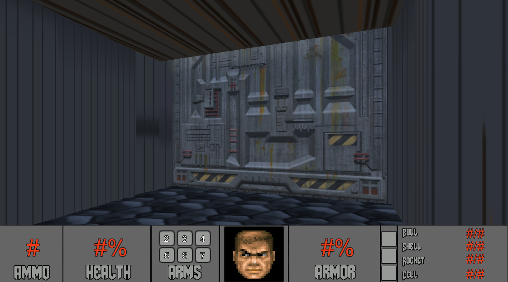
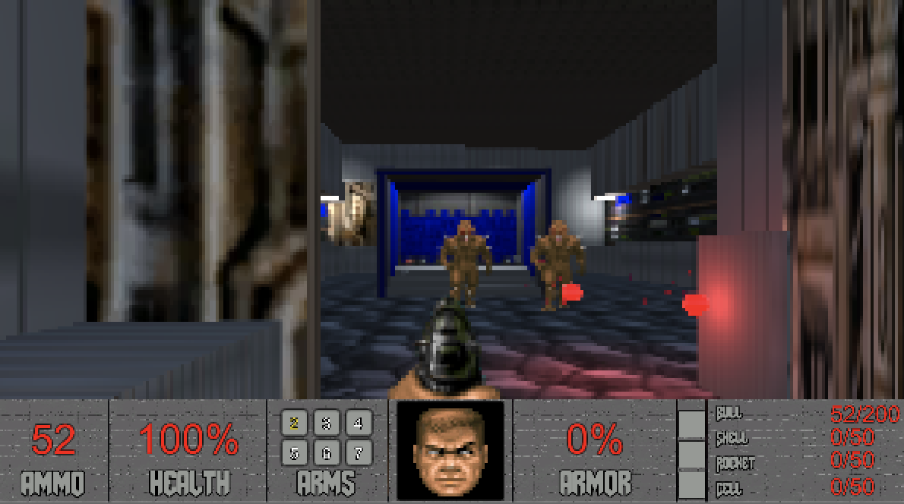

About
The project involved recreating the initial level of the 1993 Doom game by id Software over a seven-week period. The team constructed original assets mirroring the initial textures, sounds, and codes while preserving the spirit and atmosphere of the original level, including its hidden secrets.
My responsibilities included creating the head bob and player movement systems, along with implementing the pixelation post-processing effect.
Development

Head Bobbing:
Implemented a "head bobbing" feature to enhance immersion by simulating natural up-and-down motion in the player's viewpoint during movement.
The effect uses core variables: bobbingSpeed (pace), bobbingHeight (intensity), and midpoint (base position). The isHeadBobbing flag triggers a rhythmic bobbing effect synchronized with player movement, creating a sine wave pattern.
Our version uses two separate cameras; one showcasing the player's viewpoint and another focusing on the weapon. Both are powered by the same script but with different settings, offering a unified experience true to the keyboard-driven controls of the original title.
| 1 | public class HeadBob : MonoBehaviour |
| 2 | { |
| 3 | public float bobbingSpeed = 0.18f; |
| 4 | public float bobbingHeight = 0.2f; |
| 5 | public float midpoint = 1.8f; |
| 6 | public bool isHeadBobbing = true; |
| 7 | private float timer = 0.0f; |
| 8 | |
| 9 | void Update() |
| 10 | { |
| 11 | float waveslice = 0.0f; |
| 12 | float horizontal = Input.GetAxis("Horizontal"); |
| 13 | float vertical = Input.GetAxis("Vertical"); |
| 14 | Vector3 cSharpConversion = transform.localPosition; |
| 15 | |
| 16 | if (Mathf.Abs(horizontal) == 0 && Mathf.Abs(vertical) == 0) |
| 17 | { |
| 18 | timer = 0.0f; |
| 19 | } |
| 20 | else |
| 21 | { |
| 22 | waveslice = Mathf.Sin(timer); |
| 23 | timer = timer + bobbingSpeed; |
| 24 | if (timer > Mathf.PI * 2) |
| 25 | { |
| 26 | timer = timer - (Mathf.PI * 2); |
| 27 | } |
| 28 | } |
| 29 | |
| 30 | if (waveslice != 0) |
| 31 | { |
| 32 | float translateChange = waveslice * bobbingHeight; |
| 33 | float totalAxes = Mathf.Abs(horizontal) + Mathf.Abs(vertical); |
| 34 | totalAxes = Mathf.Clamp(totalAxes, 0.0f, 1.0f); |
| 35 | translateChange = totalAxes * translateChange; |
| 36 | |
| 37 | if (isHeadBobbing == true) |
| 38 | cSharpConversion.y = midpoint + translateChange; |
| 39 | else if (isHeadBobbing == false) |
| 40 | cSharpConversion.x = translateChange; |
| 41 | } |
| 42 | else |
| 43 | { |
| 44 | if (isHeadBobbing == true) |
| 45 | cSharpConversion.y = midpoint; |
| 46 | else if (isHeadBobbing == false) |
| 47 | cSharpConversion.x = 0; |
| 48 | } |
| 49 | |
| 50 | transform.localPosition = cSharpConversion; |
| 51 | } |
| 52 | } |

Post-Processing:
The pixelization post-processing effect simulates the original game's graphic style. Since Doom's engine displayed 3D environments derived from 2D floor plans, it produced low-resolution visuals with graphic aliasing.
Using Unity and custom assets, we applied post-processing to the camera to replicate this appearance -- a cost-effective approach facilitating the desired graphic representation.